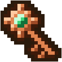

Quand revoter ?
Chaque site a son propre délai entre deux votes. /vote te le dit, site par site : « tu peux voter », ou le temps qu'il reste.
Voter pour Casteria
Chaque vote pour Casteria sur un site de classement te donne une Clé de Vote, et un vote sur deux, un crédit. Et chaque vote fait monter Casteria dans les classements, là où de nouveaux joueurs le trouvent.
Rien à taper en jeu après ton vote : c'est le site de vote qui prévient le serveur.
Le bouton juste en dessous ouvre la page de vote de Casteria. En jeu, /vote te donne le même lien, et le temps qu'il te reste avant de revoter.
Sur le site, écris ton pseudo du jeu, lettre pour lettre, puis valide ton vote.
Ta Clé de Vote arrive en jeu quelques secondes après ton vote, là où tu es. Tu n'es pas en jeu ? Elle t'attend à ta prochaine connexion.
Sur la page du site, écris ton pseudo du jeu, exactement. Ta Clé de Vote arrive en jeu quelques secondes après ton vote.
La liste des sites où voter est dans le jeu : tape /vote, clique sur un site, et vote.


Elle ouvre la Caisse de Vote, au palais, chez Fortuné le Forain : la bande dorée tourne, et ton lot s'affiche en grand.
Le site envoie ton vote au serveur sous le pseudo que tu écris. Écris celui de ton compte Casteria, celui que tu as choisi dans le launcher, sans une faute : sinon, ton vote part sous un autre nom. Pas encore venu sur Casteria ? Ton vote t'attend 7 jours : entre au palais, et il compte.
Chaque site a son propre délai entre deux votes. /vote te le dit, site par site : « tu peux voter », ou le temps qu'il reste.
Sous la liste, /vote compte tes Clés de Vote du jour et tes votes du mois.
Quand tu votes, le serveur l'annonce à tous : « TonPseudo a voté ! Toi aussi : /vote ».
Les premiers pas t'en offrent une, et elle s'achète aussi dans la boutique.
Le launcher est gratuit et installe tout. Choisis ton pseudo, entre au palais, et ton premier vote t'attend.